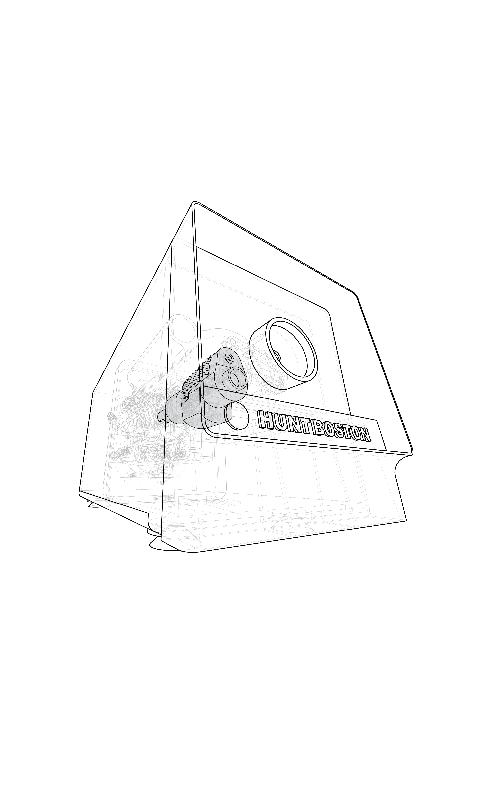
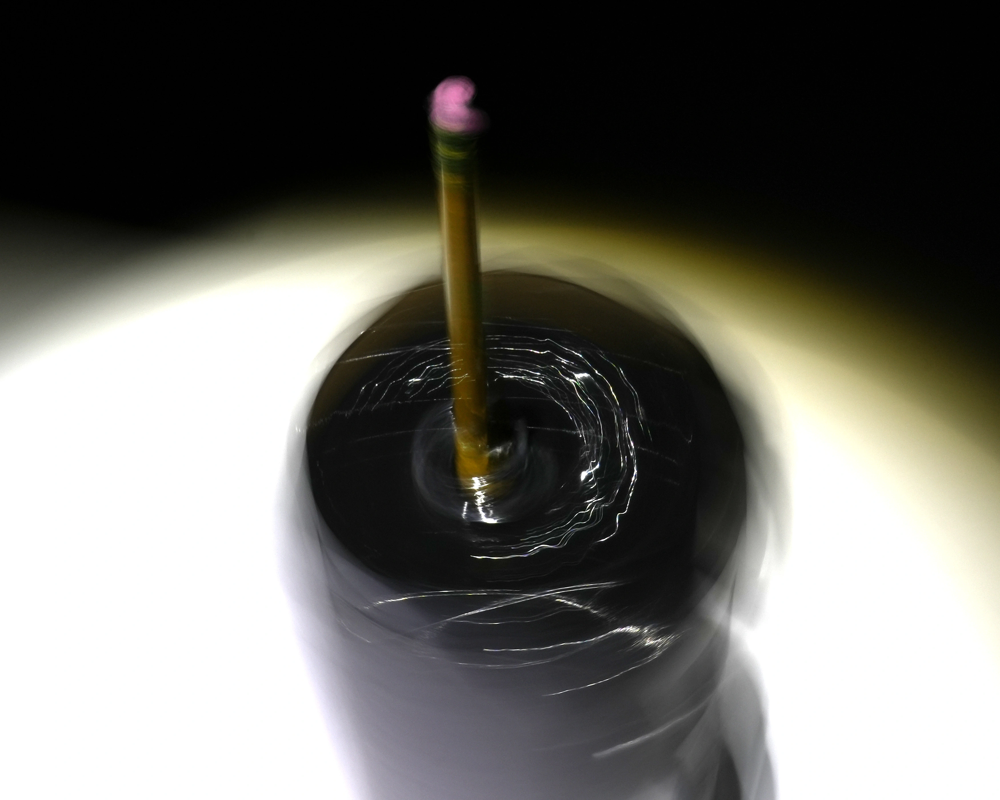
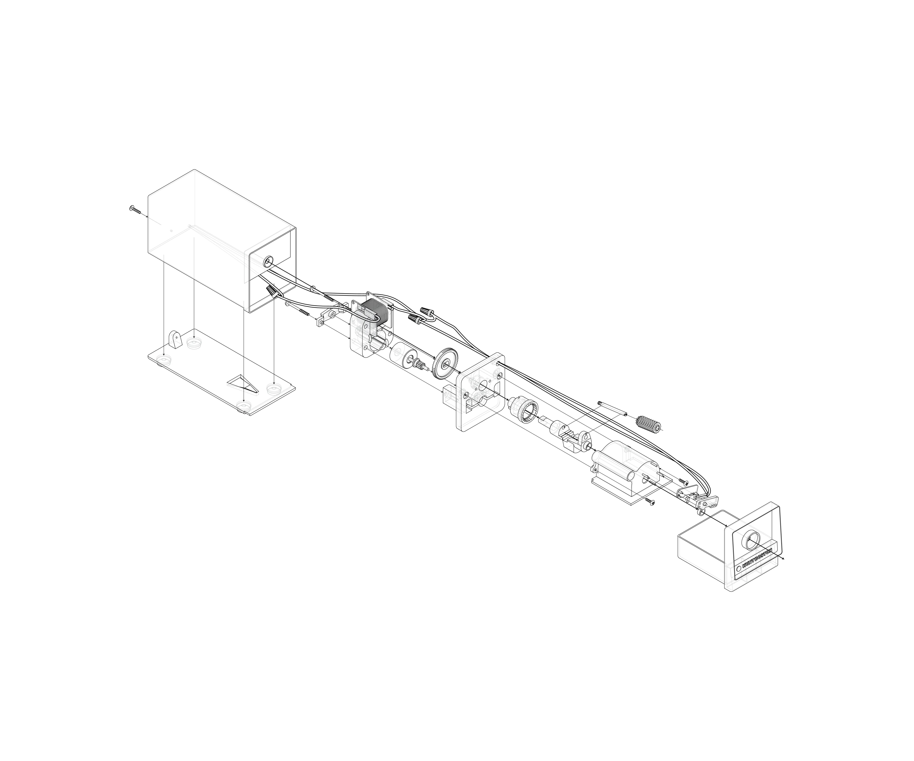
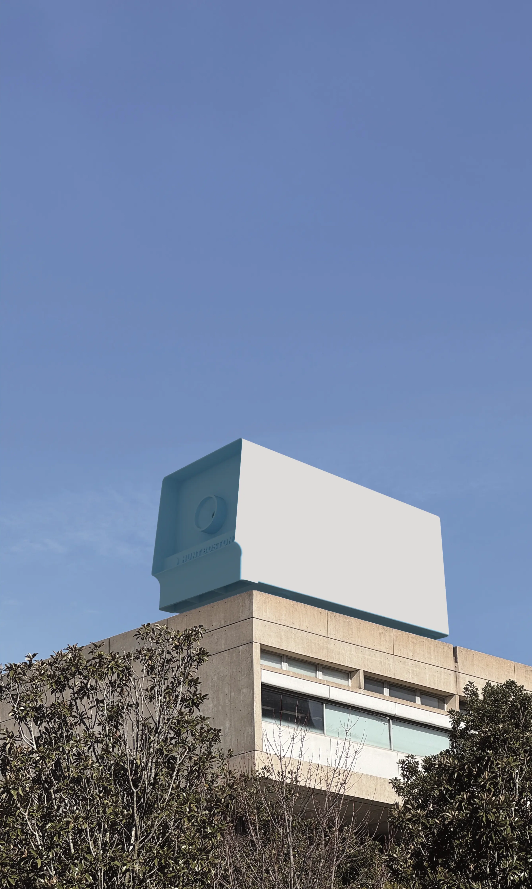

Winter 2026
The goal of this project was to explore the logic and intricacies behind common objects. First, I selected a pencil sharpener as my object. Although it is a simple box from the outside, I was intrigued at the parts hidden within. Next, I took pictures and drew diagrams that were able to represent the essence of my object in various ways. The scanned array, ghosted perspectagal, and exploded axon diagrams explored the inner workings of the pencil sharpener, while the superimposition and manipulative images revealed how the exterior of the sharpener related to its interior and the space around it. This project expended my knowledge about representation and modeling. By working with many unique pieces, I was able to develop new modeling skills. Also, the simplicity of the sharpener forced me to think outside of the box in order to represent the object in interesting and revealing ways.

Object superimposed atop the UT Art+Architecture buidling.


